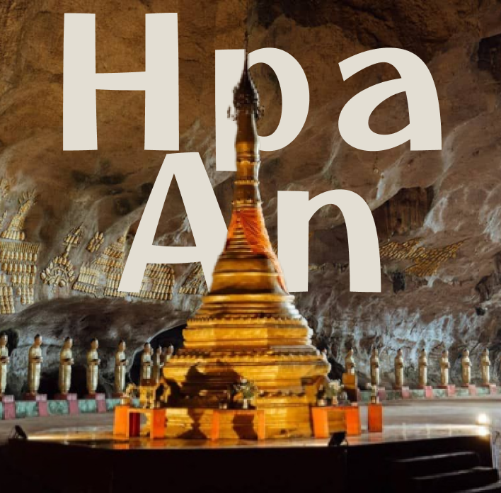

Discover the cultural treasures of Myanmar
Landmarks are crucial for orientation, providing cognitive anchors and reference points that aid in wayfinding and communication. They also contribute to a sense of place and cultural identity, shaping how we understand and interact with our environment.